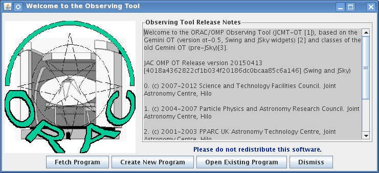
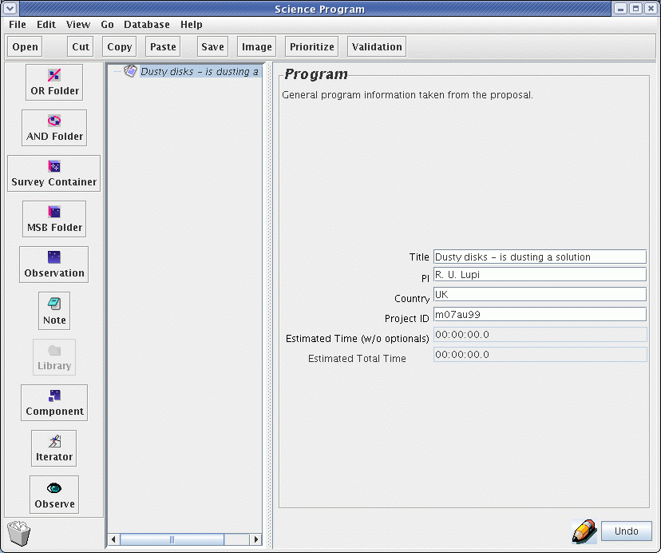
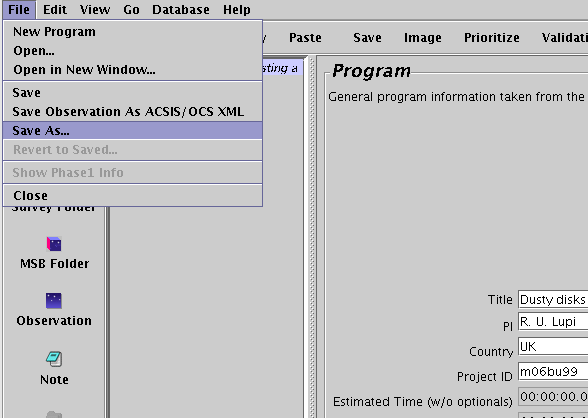
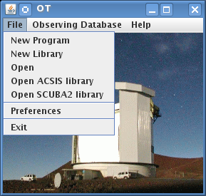
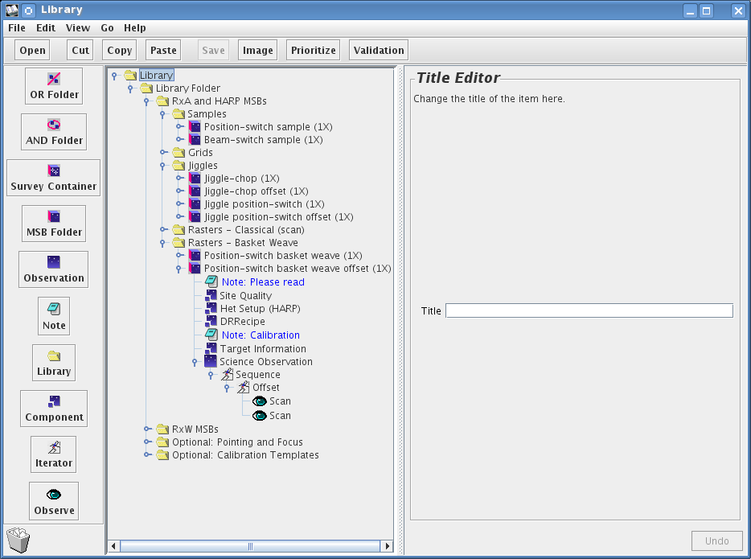
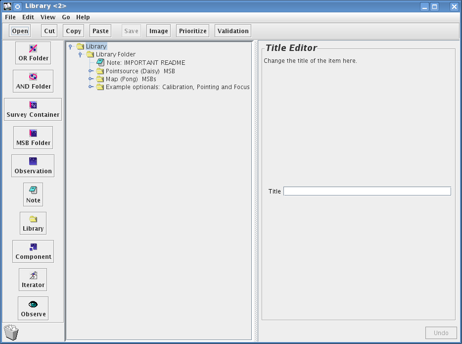
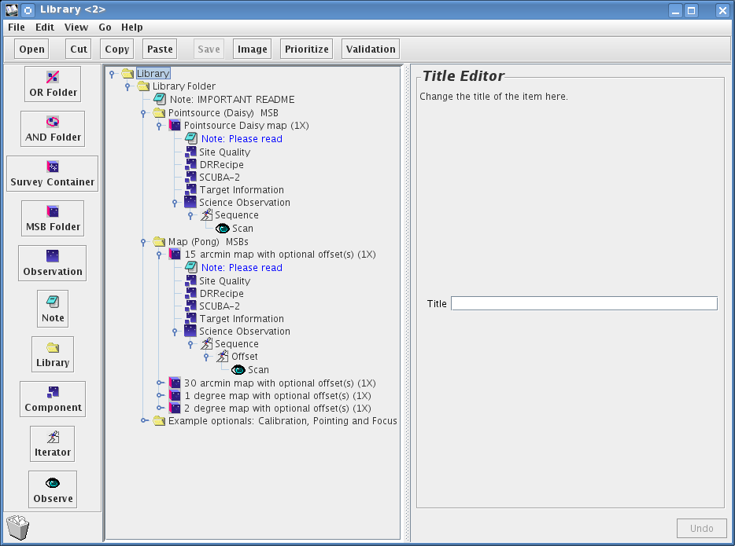
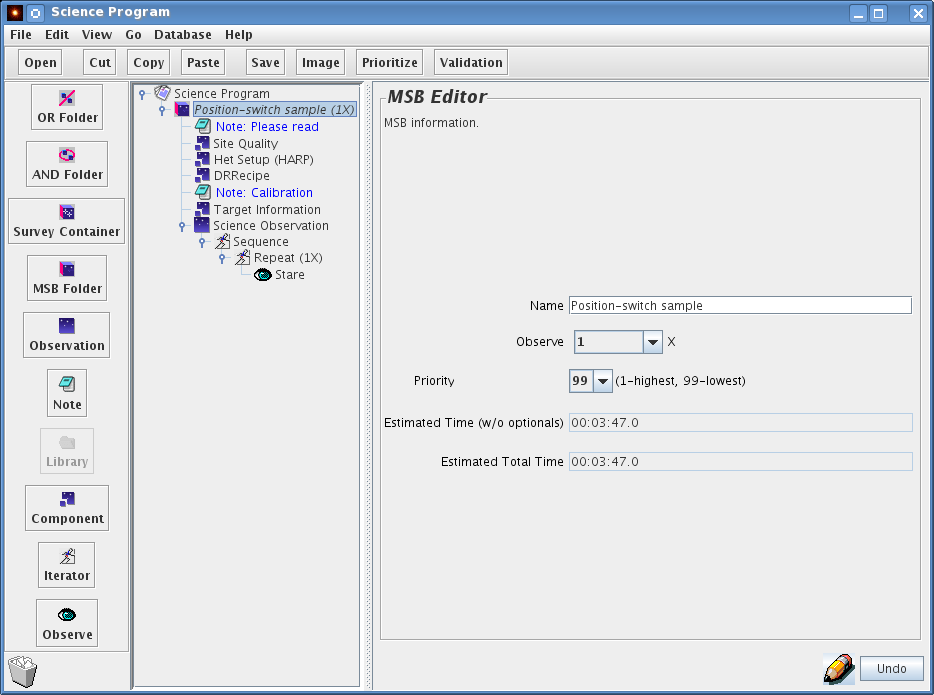
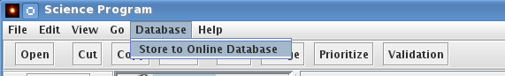
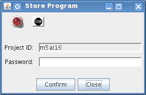

The JCMT OT software enables users to fully specify the observations required to be carried out at the telescope for a specific program. In this section we describe how to initially create a program, how to populate a program with MSBs (for information about what an MSB is see here) from a library provided, and how to save/upload your program to our database.
To begin you should initialize the JCMT OT. Remember that the software must already be downloaded and installed for these pages to be relevant (see our software installation page — make sure you have downloaded the latest version!)
You will see two windows pop up. One has a color picture of the telescope - that is the JCMT root window. You can use its menus to open and save files, access the MSB libraries for both ACSIS and SCUBA-2, and fetch programs from our database.
The window with the JCMT line drawing, which pops on top of the root window, provides a shortcut to some of the most common start up actions, so we call that the start up screen:

For now, press "Create New Program" on the start up screen. The start up window will be replaced by an science program window. If you are using a proxy server to connect to the internet now would be a good time to configure the OT to use this — see the instructions here.
("Open Existing Program" lets you open a science program that you've previously edited and saved in your own computer system. "Fetch Program" allows you to download a program that that you have completed and uploaded to our observing database. To download the program, of course, you will need the project ID (e.g. m15ai77) and password.
Look at your blank science program window. It's essentially divided in four sections:
The bar between the program panel and the editor panel can be dragged around to enlarge or reduce them.
When you start a new Science program the only information in the program panel is a "Science Program" line. Take the time to fill in its details in the Science Program editor on the right. The most important field here is the Project ID field. You have to get this right otherwise you will not be able to submit your program to us. Your project ID is what you were assigned when you submitted your proposal for telescope time. It is of the form m15a followed by a country letter and a two digit proposal number (sometimes followed by a letter).

Also on the panel are estimates of the total time the specified program will take with and without optional observations, which are currently both 0 since we haven't specified any observations yet.
Now that we've done something we can save it. Open the File menu in your Science Program window and choose "Save As...". You will be prompted for a file name.

The file format is XML, which is a text (not binary) format that you can read in later with the OT, or email to your collaborators. If you have a question, you can also email your file to your "Friend of the Project" along with your question.
You might have noticed that the title of your Science Program was italics and now that you've saved the file, the title is normal font. When you edit a component of your Science Program its title changes font to indicate that you need to save your work.
The libraries containing commonly used MSBs can be found by by going to the JCMT root window.

By clicking on the ACSIS library in the JCMT root window a new window will appear displaying a number of folders containing commonly used ACSIS MSBs:

It is possible to open up and look inside the key ACSIS library components and see inside the various types of MSBs by using the little switch on the left of the folder icons. This is an open/close toggle switch. In the image below these folders have been expanded:

By clicking on the SCUBA-2 library in the JCMT root window new window will appear displaying a number of folders containing commonly used SCUBA-2 MSBs:

It is possible to open up and look inside the key SCUBA-2 library components and see inside the various types of MSBs by using the little switch on the left of the folder icons. This is an open/close toggle switch. In the image below these folders have been expanded:
The best way to get a feel for the various elements within an MSB and its structure it is best to copy over an existing one from either the ACSIS or SCUBA-2 library into a blank Science Program.Remember a Science program will contain one or more MSBs - depending on the specific program of work.
In order to produce this example I have copied over the HARP "Position switch sample" from the ACSIS library into an empty Program.
To open up the MSB click on the push "lever". Inside you will find a Note, a Site Quality Component, Het Setup component, a DR Recipe component, a second Note (for calibrations), a Target Info. component, and an observation component which is labeled "Science Observation". Inside the "Science Observation" component we see a Sequence iterator, a Repeat iterator and finally a stare:

In order to produce this example I have copied over the "Point Source Daisy map" from the SCUBA-2 library into an empty Program.
To open up the MSB click on the push "lever". Just as we saw in the ACSIS example we find a Note, a Site Quality Component, Het Setup component, a DR Recipe component, a Target Information component, and an observation component which is labeled "Science Observation". Inside the "Science Observation" component we see a Sequence iterator, and finally a stare:

The various icons that appear when making your science program/MSB are specific. The explanation for what these icons are are given below:
 MSBs are individually schedulable blocks and
contain one or more fully specified science
observation and any calibrations.
MSBs are individually schedulable blocks and
contain one or more fully specified science
observation and any calibrations.
Observations are observations of a single astronomical target and contain components and a sequence.
 Components are configurators for the JCMT systems such as
the instrument (het setup component), the telescope (Target
component) and the scheduler (Site Quality component).
Components are configurators for the JCMT systems such as
the instrument (het setup component), the telescope (Target
component) and the scheduler (Site Quality component).
 Iterators are potentially multiple actions and
contain other iterators and one or more
eyes.
Iterators are potentially multiple actions and
contain other iterators and one or more
eyes.
 Eyes are actions that results in the actual taking
of data — a single data file per eye to be precise.
Eyes are actions that results in the actual taking
of data — a single data file per eye to be precise.
Notes are a repository of useful information and can go anywhere.
Simply by looking at the HARP and SCUBA-2 MSB examples provided in the previous section it is possible to see several components are common to both both Heterodyne and continuum MSBs, but due to their differences they are expanded on within their own Chapters. The two components that are identical are:
Notes
Site Quality
the JCMT operates a flexible queue system. The best way to communicate your program aims and completion parameters is to write a brief note to accompany your MSB.
By default, the heterodyne library MSBs contain two note element at the beginning of the MSB. The notes can be combined into a single one if preferred:
A note for general remarks concerning the program.
A calibration note for specific instructions for the calibration observations - if required.
By default, the SCUBA-2 library MSBs contain a single note element at the beginning of the MSB.
The note component consists of a text window where you can include textual information, with the option of showing the note to the observer and TSS at the time the observation is made. If you click on the note icon, the right hand panel allows you to enter the name of the note and the main text body of the note. The "Show to observer" check-box should be checked if you want the note to be visible for the observer/TSS at the time of observation.
It is strongly advised that each of your MSBs contains at least one "Show to observer" note. This should cover the aim of the project, what an observer/Telescope Operator might want to keep an eye out for when observing the program/MSB at the telescope - emission features, baseline issues, noise levels.

Setting the "Show to observer" tick box brings up a "Completion Parameter" and "binning" field. These should contain information which help the observer and TSS to decide when to consider your observation to be complete. By default, your program will be executed with exactly the number of integration and number of repeats as specified. However, where possible, an attempt will be made to optimize the process using the specified Completion Parameters. The detailed logistics of the scheduling may prevent this, but when possible this may save time for your project or guarantee the results.
For instance you may want to allow for more time than the MSBs nominally take to allow for the addition of extra repeats in order to ensure the requested RMS. Setting a S/N target may save unnecessary repeats, etc. The "Completion Parameter" should include a value for the total expired time, and/or a required signals-to-noise, and/or RMS noise value. Best is to provide all three and whichever one is reached first determines the completion. The assumed bin size, either in km/s or MHz, should be entered in the "Binning" field. The above screen shot shows an example of a possible "Show to observer" for an extragalactic spectral line observation. Be aware, however, that ultimately it is up to YOU, the PI, to determine when the data have sufficient S/N, by downloading and analyzing your data soon after they are acquired and updating your MSBs as required.
Additional notes can be inserted at any point in the MSB from the icon menu and you may have more than one "show to observer" notes in an MSB. For example, you could choose to insert a "show to observer" note above the "chop" element to clarify the use of an unusual chopping scheme.
Finally, there is no need to repeat information in notes that is already included in other components of the MSB. This might include receiver tunings, chop throws, offset positions and science targets. All of these should be set up in the appropriate MSB components. If they are reproduced in notes, there is a risk that changes made to main body of the MSB will not be reflected in the notes, leading to conflicts between the notes and the MSB components resulting in confusion at the telescope.
The Site Quality component specifies any weather-related scheduling requirements for an MSB. Click on the Site Quality component to get the Site Quality panel:

The Time Allocation Committee (TAC) normally allocates your program a certain range of tau (opacity), so you probably don't need to change anything here unless your program is using multiple receivers and the TAC-allocated tau range is not sufficiently specific for this MSB. You should specify an appropriate range of tau to match the demands of the receiver to be used. But beware: the resulting range of tau in which the MSB can be observed is then the intersect of the TAC allocation and your input: make sure this is not an empty set! For example, if the TAC allocation for your project is weather band 4 (tau(225GHz) between 0.12 and 0.2) and you request a tau range between 0.1 and 0.12, then your project will be picked up for observation ONLY if the tau is EXACTLY 0.12.
The default value of the sub-millimeter seeing is "Don't Care".
It is useful to set the "τ for noise calculation" value, however, to the average or expected value of tau during which your observations are expected to be obtained. (Note that the OT does not know what τ range was allocated for your project.) The OT uses the value in this field to calculate the estimated RMS of the observation specified in the phot/sam etc. "eye"-cons.
For a review of the Weather Bands used at the JCMT you can visit the JCMT's weather pages.
When creating your own program you should ensure you:
Fill in your Science Program details
Fetch a template MSB from the library
Set the target co-ordinates
Select the DR recipe
And also where necessary:
Increase the number of "observations" required and scan time if necessary for the MSBs
Modify the chop/update an off/reference position
Select the instrument set up
Make an informative note for the observer
Specify site quality - typically this can be left as "allocated"
When you think you are happy with your MSB, your are strongly advised to validate the MSB before submitting it to the database. To do this, click on your science program and press the "Validation" button on the bar above. This will tell you if there's anything seriously wrong with your MSBs — the output can be a bit cryptic though — so do contact your Friend of Project if you can't figure out what it means. You can also check individual MSBs and observations. Check the validation messages and contact your Friend of the Project if you need help.
When you are happy about the MSBs you have created you can submit them to our database. As soon as you do this, they may be observed so don't do this unless you mean it! To submit your program to our database, pull down the Database menu on your Science Program window:

A little window will pop up using the Project ID that you put into your Science Program at the start (see Your science program). It will also ask you for a password.

You can get a password from our password generator at http://omp.eao.hawaii.edu/cgi-bin/issuepwd.pl . If you forget it, go there to get another one. If you are PI on more than one project you'll need a password per project so that you can share it with your different sets of Co-Is. The password you get will also allow you access to your Feedback Area to check on the progress of your project, double-check your MSBs, retrieve your data and exchange views with our staff. Check it out. Both the above links can also be found off on OMP home page http://omp.eao.hawaii.eduWhen you do get your password and submit your program, you will receive a summary of all the MSBs contained in your program. Check to make sure that everything is okay. If the are major problems with you science program the database may complain and refuse to accept the submission. If you don't understand what the problem is, email us along with a copy of the problematic project, but check the Frequently Asked Questions for hints first.
One last thing: don't forget to save your Science Program to your local file too. But — always start a new session by fetching the program from our database before making any changes, since our system modifies your science program to indicate which observations have been observed.
Note that throughout this document integration times are the "on"-source time only, instead of "on+off" as before.
There is a section on Advanced Topics that observers should read. There you will learn more about how the Target and Heterodyne components can interact with each other, and also how to use the AND/OR folders when you have many MSBs in your program. Survey containers may significantly simplify your setup if used properly.